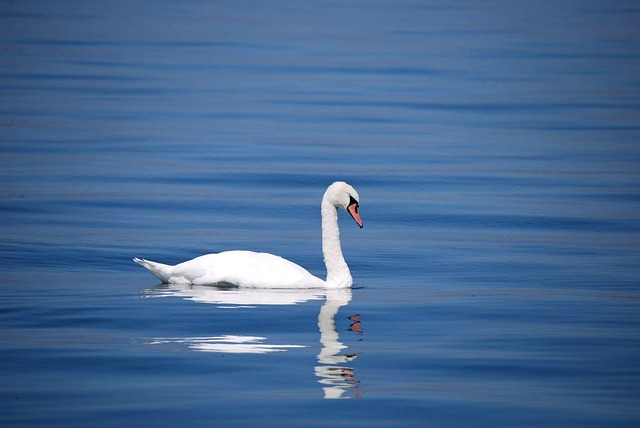
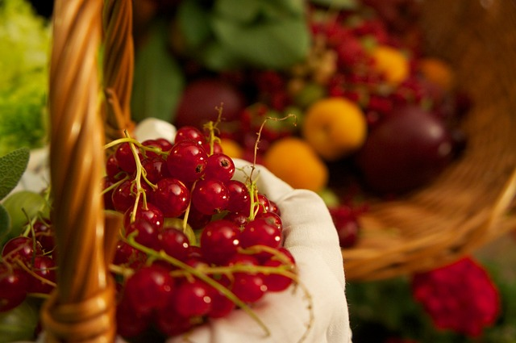
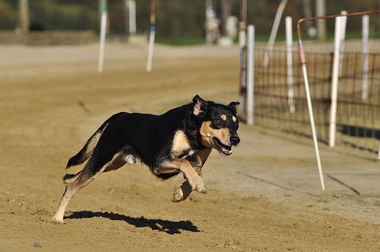
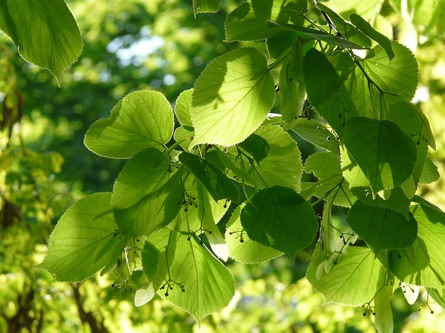

The human body contains from 55% to 78% water, depending on body size. To function properly, the body requires between one and seven liters of water per day to avoid dehydration; the precise amount depends on the level of activity, temperature, humidity, and other factors.
For those who have healthy kidneys, it is rather difficult to drink too much water, but (especially in warm humid weather and while exercising) it is dangerous to drink too little.
Humans require water with few impurities. Common impurities include metal salts and oxides, including copper, iron, calcium and lead, and/or harmful bacteria.
Drink water today
Drink water tomorrow
Drink water the day after that
Drink water three days from now
Drink water every day
Drink water all your life- It's good for your health.
- It's inexpensive.
- It's less harmful for the environment.
- Read more on Wikipedia
| 1 | 2 | 3 |
|---|---|---|
| 2 | 4 | 6 |
| 3 | 6 | 9 |
you can't multiply.
|

Swans swim on water. |
Goats are mostly water. |

You can get water through food. |
|
Stone can be worn down by water. |
The sun can be fueled by water. |
Matches won't burn water. |
|

You need water to run. |

Without water, nothing would live. |
Puppies drink water. So should you. |